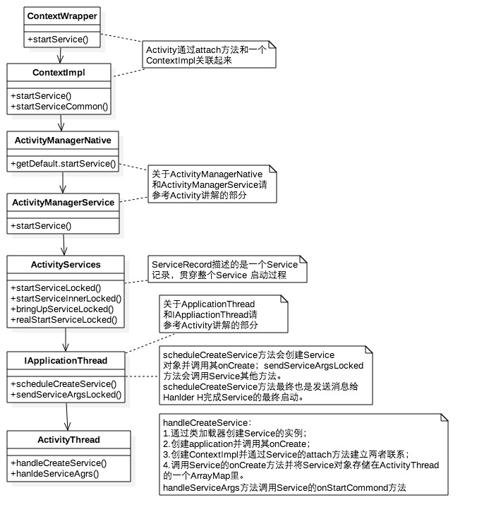

《Android艺术探索》读书笔记 第九章. Componentswork
前言
Activity的主要作用是展示一个界面并和用户交互，扮演前台界面的角色，可由显式或者隐式Intent来启动
Service是一种计算型组件，用于在后台执行一系列计算任务。尽管service是用于后台执行计算的，但是它本身是运行在主线程中的，因此耗时的后台计算仍然需要在单独的线程中去完成。Service组件有两种状态：启动状态和绑定状态。当service处于绑定状态时，外界可以很方便的和service进行通信，而在启动状态中是不可与外界通信的。
BroadcastReceiver是一种消息型组件，既可以在AndroidManifest文件中注册，也可以都在代码中注册，用于在不同的组件乃至不同的应用之间传递消息，它工作在系统内部。广播有两种注册方式：静态注册和动态注册。静态注册是在AndroidManifest中注册，在应用安装的时候会被系统解析，这种广播不需要应用启动就可以收到相应的广播。动态注册需要通过Context.registerReceiver()来注册，这种广播需要应用启动才能注册并接收广播。BroadcastReceiver组件一般来说不需要停止，它也没有停止的概念。
ContentProvider是一种数据共享型组件，调用不需要借助Intent，其他三个组件需要，用于向其他组件乃至其他应用共享数据。ContentProvider中的insert、delete、update、query方法需要处理好线程同步，因为这几个方法是在Binder线程池中被调用的，另外ContentProvider组件也不需要手动停止。
Activity 工作流程
ApplicationThread是ActivityThread的一个内部类，它继承自ApplicationThreadNative，而ApplicationThreadNative继承自Binder并实现了IApplicationThread接口，ApplicationThreadNative的作用其实就和系统为AIDL文件生成的类是一样的。
ActivityManagerService(AMS)继承自ActivityManagerNative，而ActivityManagerNative继承自Binder并实现了IActivityManager这个Binder接口，因此AMS也是一个Binder。
一个应用只有一个Application对象，它的创建也是通过Instrumentation来完成的，这个过程和Activity对象的创建过程一样，都是通过类加载器来实现的。
ContextImpl是Context的具体实现，ContextImpl是通过Activity的attach方法来和Activity建立关联的，在attach方法中Activity还会完成Window的创建并建立自己和Window的关联，这样当window接收到外部输入事件后就可以将事件传递给Activity。 [这里可能有误，应该是Activity将事件传递给window]
Activity启动过程

Service 工作流程
Service分为两种工作状态,两种状态可以共存。
一种是启动状态，用于后台计算；
1 | startService（intentService） |
另一种是绑定状态，用于与其他组件和Service交互。
1 | bindService (intetService, mServiceConnetcion ,BIND_AUTO_CREATE); |
启动过程
绑定过程

BroadcastReceiver 工作流程
- 广播的发送有几种类型：普通广播，有序广播，粘性广播，发送接收过程是类似的
- 一个应用处于停止态分为两种类型：1.应用安装未运行；2.应用被手动或被其他应用强停了，从Android3.1开始，处于停止状态的应用无法接收开机广播
- 广播静态注册在应用安装的时候由系统自动完成注册，具体是由PackageManagerService完成整个注册过程，其他三大组件也是在应用安装时PMS解析并注册的。
动态注册过程

发送和接收过程
ContentProvider 工作流程
ContentProvider启动流程：
启动流程：
- 当一个应用启动时，入口方法是ActivityThread的main方法，其中创建ActivityThread的实例并创建主线程的消息队列
- ActivityThread的attach方法中会远程调用ActivityManagerService的attachApplication，并将ApplicationThread提供给AMS，ApplicationThread主要用于ActivityThread和AMS之间的通信；
- ActivityManagerService的attachApplication会调用ApplicationThread的bindApplication方法，这个方法会通过H切换到ActivityThread中去执行，即调用handleBindApplication方法；
- handleBindApplication方法会创建Application对象并加载ContentProvider，注意是先加载ContentProvider，然后调用Application的onCreate方法。
当ContentProvider所在的进程启动的时候，它会同时被启动并被发布到AMS中，这个时候它的onCreate要先去Application的onCreate执行。
ContentProvider的android:multiprocess属性决定它是否是单实例，默认值是false，也就是默认是单实例。当设置为true时，每个调用者的进程中都存在一个ContentProvider对象。
当调用ContentProvider的insert、delete、update、query方法中的任何一个时，如果ContentProvider所在的进程没有启动的话，那么就会触发ContentProvider的创建，并伴随着ContentProvider所在进程的启动。下图是ContentProvider的query操作的大致过程：